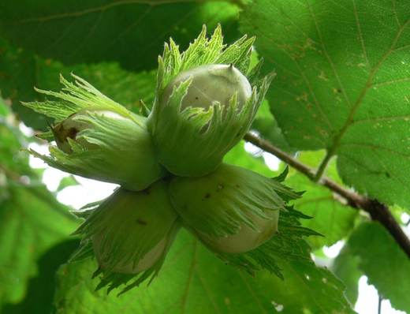
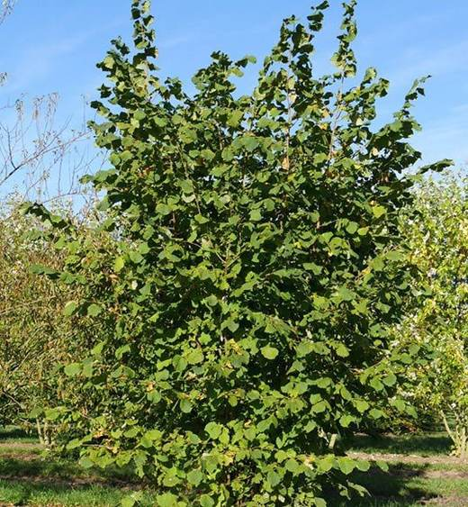
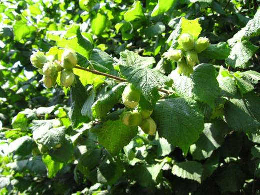
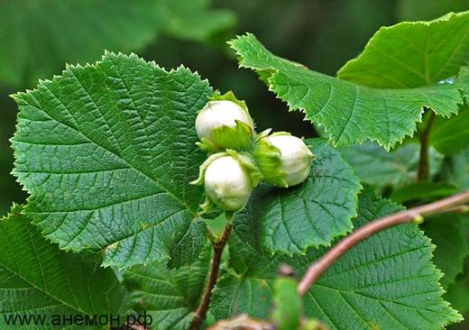

Лесной гость в саду: золотистые серёжки в марте, орехи в августе и густой многоствольный куст.




Клик по фото — полный размер. Фотографии иллюстрируют сорт/вид; собраны из открытых источников (питомники, сортовые каталоги, Википедия).
Лещина обыкновенная — тот самый «орешник» из русских лесов. Ранней весной куст украшают золотистые серёжки (мужские цветки), а на женских из почек выглядывают крошечные малиновые рыльца. Орехи сидят в листовых обёртках-плюсках по 2–5 штук.
Куст живёт очень долго, обновляясь корневой порослью. Садовая форма лещины — фундук — отличается более крупными плодами; для средней полосы выведены сорта: Московский рубин, Ивантеевский красный, Тамбовский ранний, Первенец, Пурпурный.
| Почва | свежие, плодородные, нейтральные или слабощелочные; не любит сухих песков и болот |
| Расстояние при посадке | 3–4 м между кустами |
| Формировка | 8–12 разновозрастных стволов в кусте |
| Урожай | 1–3 кг (лесная), 3–8 кг (сортовая) с куста |
| Зимостойкость | высокая; серёжки могут подмерзать в суровые зимы |
Советы собраны из отзывов садоводов на форумах и из практики питомников; цитаты приведены по источникам ниже.